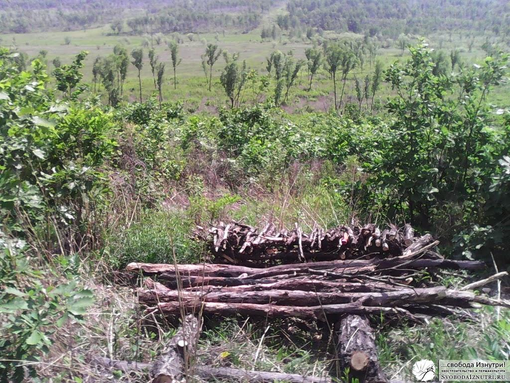
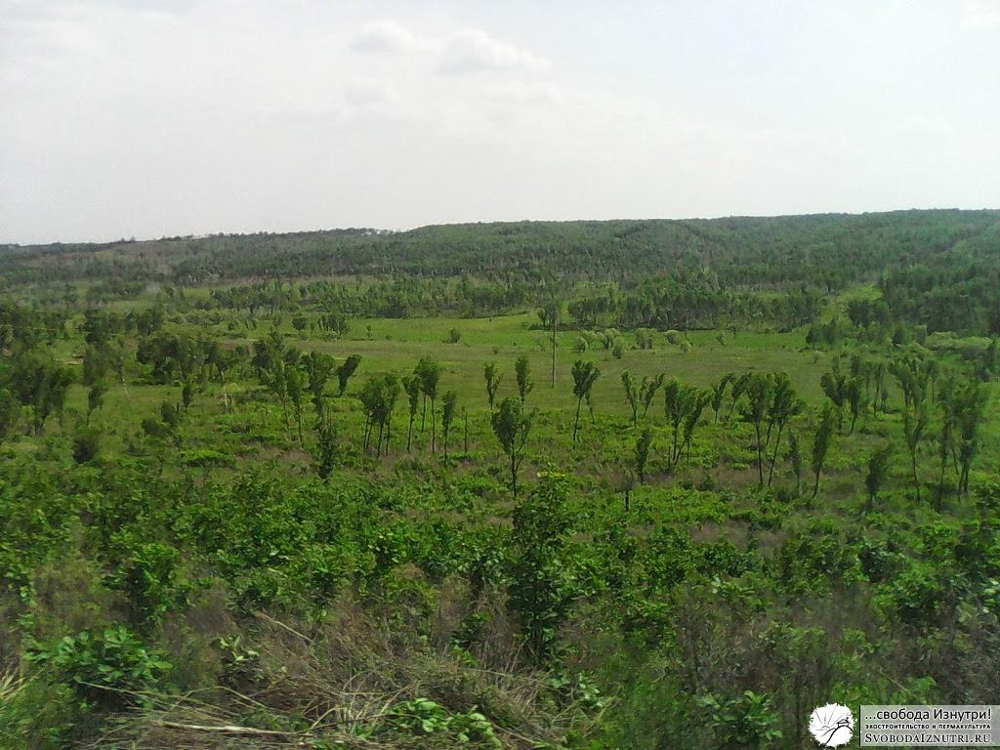

Поиск места под дом. Часть первая
Почти всё из теории, о чём я писал в предыдущих постах, было у меня в голове ко времени начала стройки.
В первых числах мая мы окончательно решили, что этим летом будем строиться. И началось планомерное освоение нашего гектара.
Мы переселились на нашу землю со всем необходимым: инструментами, рабочей одеждой, палаткой и двумя кошками.
Это были оставшиеся у нас к тому моменту Манька и её дочка Пумка. К сожалению, через неделю Манька пропала и дальнейшая судьба её нам до сих пор не известна... Но от кошек перейдём к первомаю!
Первомай
 Первомай у нас случился второго мая. В этот день был заложен первый рукотворный объект на нашей земле — хольцеровская гряда. Если вы не знаете что это такое — вбейте в поисковик. Я же тему пермакультуры раскрою позже, когда опыта будет побольше.
Первомай у нас случился второго мая. В этот день был заложен первый рукотворный объект на нашей земле — хольцеровская гряда. Если вы не знаете что это такое — вбейте в поисковик. Я же тему пермакультуры раскрою позже, когда опыта будет побольше.
Огородничеством в первое наше лето мы не занимались (в приоритете была стройка), но гряда стала замечательной площадкой для экспериментов!
{kind=link}
Ещё я потихоньку пилил на дрова лежащие вокруг гряды деревья (попадали от ветра) и складывал вот в такую конструкцию. Это самое начало, потом она заметно выросла в высоту.
Весь наш участок представляет из себя заросли леспедеции и порослевого дуба. Это отлично видно по фотографии справа. Чтобы расчистить место под дрова, пришлось вырубить целую поляну. Но то ли ещё будет...
Кочуем
Я уже упоминал, что место расположения нашего будущего дома кочевало то туда, то сюда. Причин было три: мои хотелки, хотелки жены и объективные факторы. Последнее постоянно приходило в противоречие с первыми двумя, а первые два — в противоречия друг с другом. Ну вы понимаете, семейная жизнь и всё такое :)
Первое место казалось очень удобным: не очень высоко, не очень низко (напомню, у нас склон холма), небольшой распадок без деревьев. Как раз неподалёку от него и сделали гряду. Но потом жена ткнула меня носом в то, что по этому самому распадку по весне будут стекать ручьи и дом будет медленно, но верно подмываться.
Так дом переехал в первый раз. Мы просто сместили его немного выше и в сторону от распадка. На фото слева можно увидеть как выглядело новое место под дом до того как я приложил к нему руки.
{kind=link}
{kind=link}
Как видите, в начале дня это были непроходимые джунгли. Пришлось немного поработать. Через сутки поляна выглядела как на фото справа. Человек в оранжевой футболке — это я. Вот сейчас отдохну и продолжу борьбу с джунглями...
Второе место под дом тоже казалось нам очень удобным. И вид оттуда открывался прелестнейший, фото слева.
{kind=link}
Единственный вопрос, на который пока не был до конца ясен ответ — это логистика доставки стройматериала.
Мне было ясно, что надо прокладывать автодорогу наверх сопки, ибо таскать лучше сверху, а не снизу. Хотя, была задумка натянуть тросс и сделать "фуникулёр", но, крепко подумав, идея была признана бредом :)
Палатка
{kind=link}
Ну и как не сказать про самое главное, про наше временное жилище — палатку. Её мы поставили немного в стороне. Врылись немного в холм и сделали ровную площадку.
Рядом с палаткой тоже пришлось искоренять джунгли, чтобы выходить из палатки не прямо в кусты, а на свежий воздух. Актуально это было в первую очередь из-за насекомых.
Также пришлось немного прорубать тропинку к месту размещения палатки.
Выводы
Первый важнейший вывод: прежде чем работать руками, поработайте головой. Решение где лучше разместить дом принимайте не наскоком, а подумайте с неделю, а лучше — с месяц или даже больше. Только думайте не лёжа на диване, а ходите по участку в поисках идеального места. Моделируйте различные ситуации: куда подъедет машина, где она развернётся? Откуда дует ветер зимой, откуда летом? Как и куда я буду идти за водой? Где будет огород?
Мы по неопытности бросались с горячим сердцем косить джунгли налево и направо, потратив много сил и времени. Не совершайте наших ошибок, критически относитесь к принимаемым решениям. Неплохо будет задать друзьям те вопросы, на которые сами ищете ответы. Только не говорите им ваш вариант ответа, пусть думают сами. Не отметайте нестандартные решения: порой самый сумасшедший на первый взгляд вариант оказывается самым верным.
Второй важнейший вывод: сразу делайте широкие и как можно более прямые удобные тропинки. Чтобы потом, когда будете идти, скажем, с бревном, не цепляться за колючие кусты и не петлять туда-сюда на поворотах.
Разумеется, полноценные тропинки вы будете делать тогда, когда уже подумали над размещением дома и дворовых объектов. Чтобы делать их не в пустоту, а туда, куда надо.
Продолжение читайте во второй части.